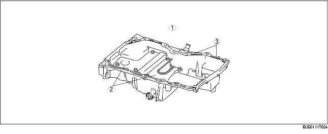

• An aluminum alloy oil pan has been adopted for noise reduction.
• An oil pan baffle plate has been adopted inside the oil pan to stabilize engine oil diffusion by crankshaft rotation and oil level when the vehicle rolls.
• A silicon sealant with excellent sealing qualities has been adopted. Also, sealing slots have been adopted on the oil pan attachment side to improve sealing performance.

.